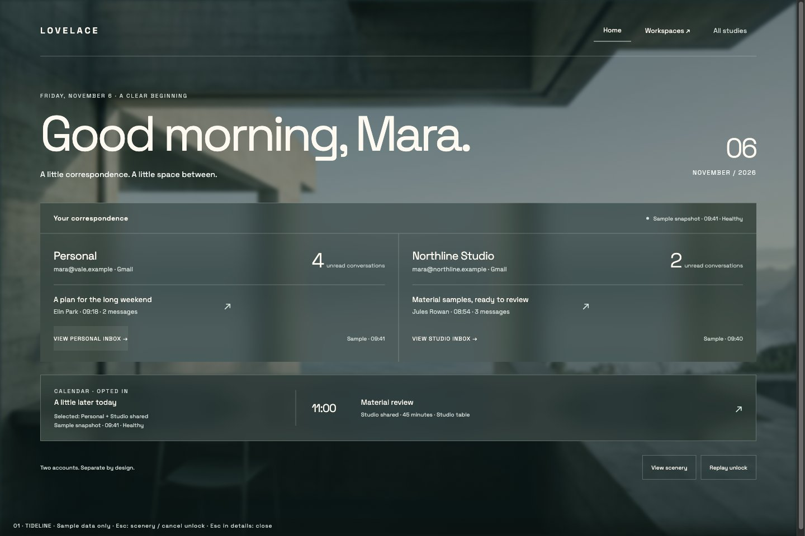
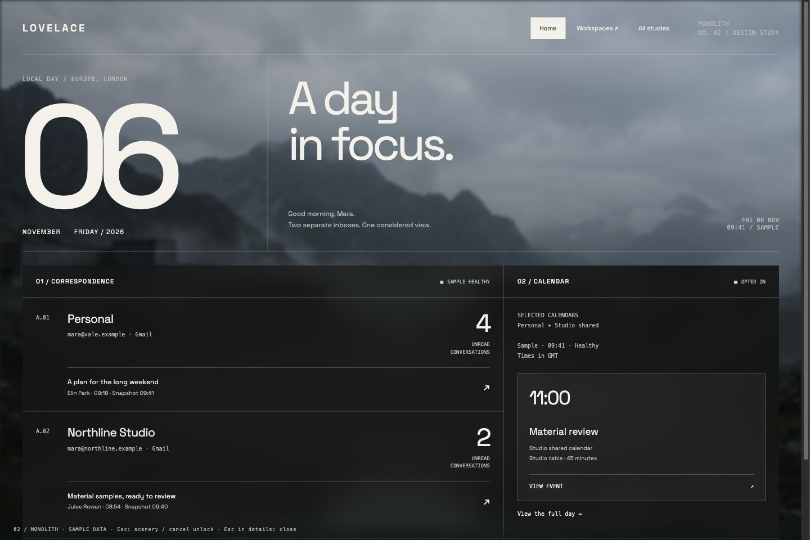
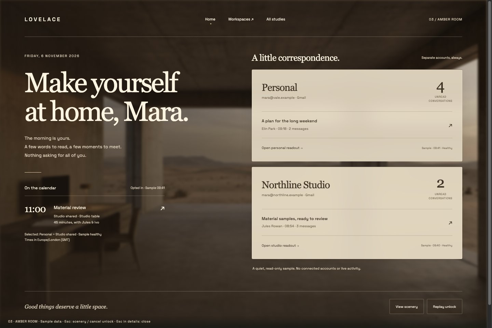
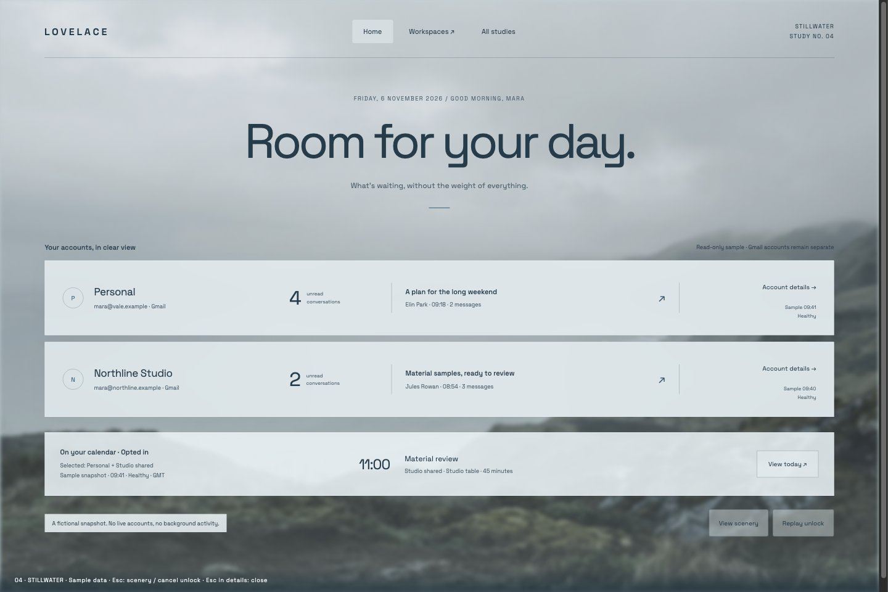
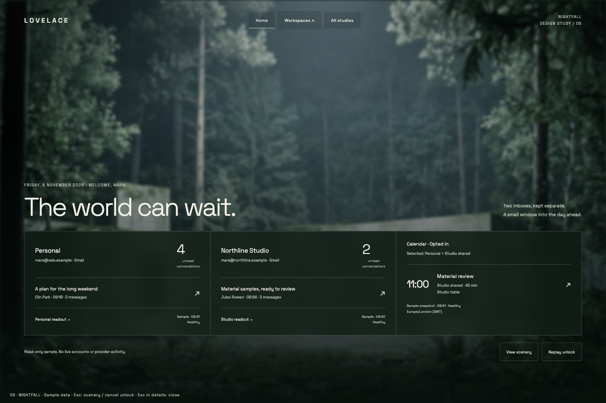
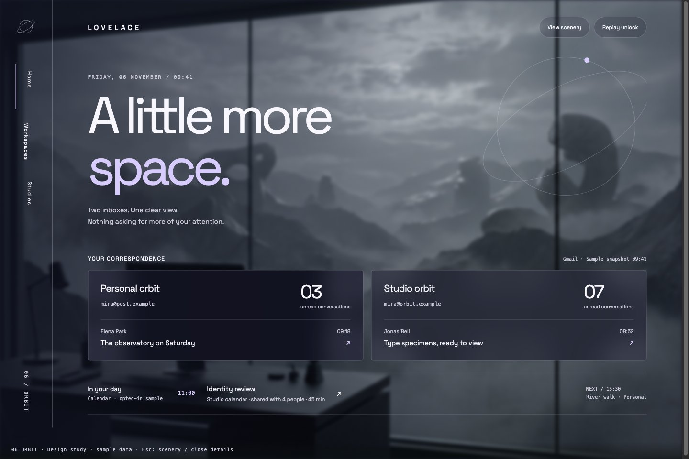
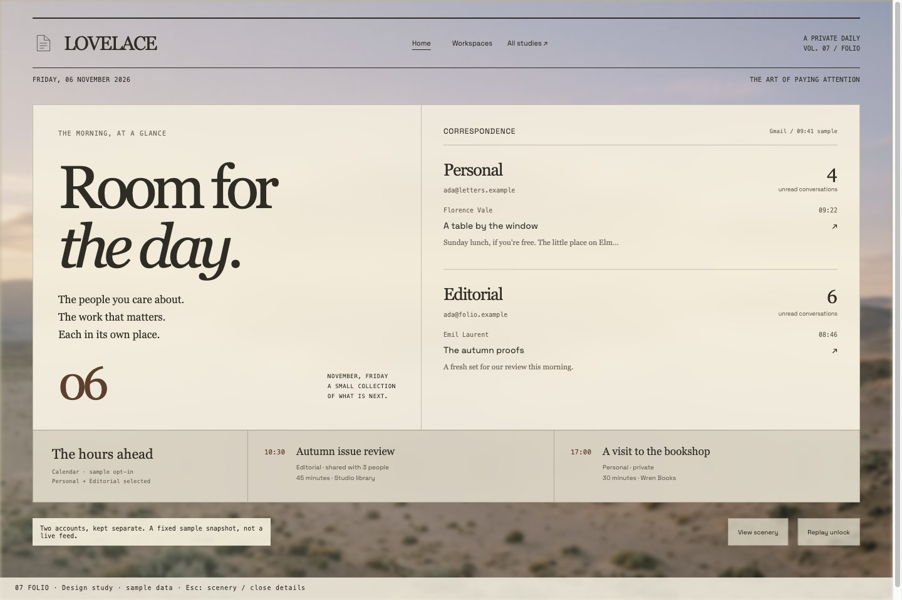
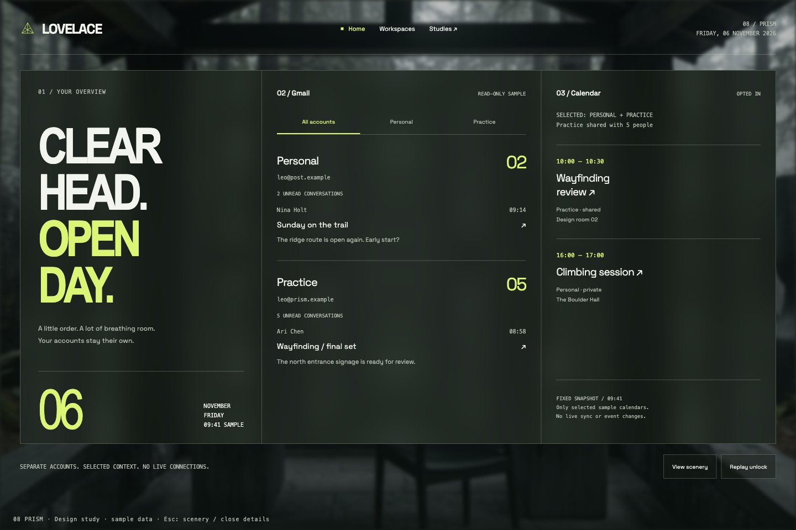
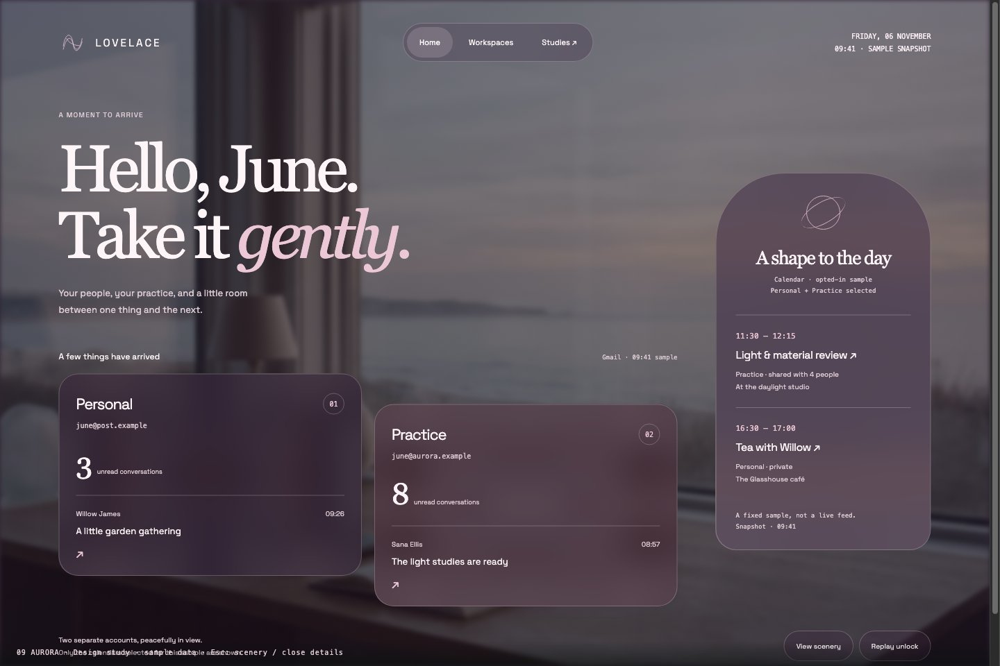
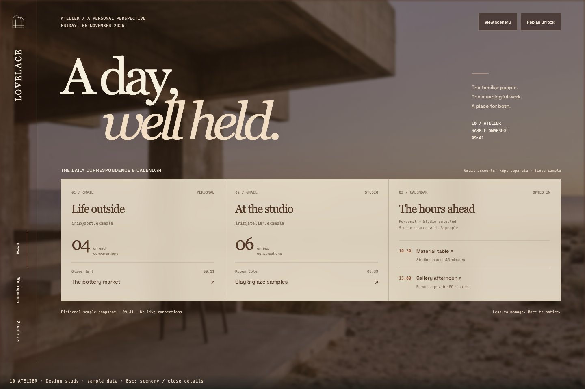

LOVELACE / independent design studies / 01—10
One landscape.
Ten points of view.
Five evolutions. Five departures. Full-image scenery, translucent glass, and the same deliberate entrance—reimagined as ten working, single-page concepts.
A direction, made inspectable.
The original ten concepts stay intact. Explore MONOLITH as a proposed rebrand: an architectural layout, sculptural logo studies, a centered unlock threshold, product views, components, voice, and printable designer review. Cut & turn is the preferred logo direction, with an ascending outline and descending creases. All earlier studies remain available for comparison. Fictional data only; no account access or provider calls.
01—05 / Close to the original
Cinematic minimalism, refined

01 / TIDELINEOpen interactive concept
Sea-glass architecture. A low horizon and open, horizontal readouts.

02 / MONOLITHOpen interactive concept
Charcoal geometry. Date-led typography and a precise architectural grid.

03 / AMBER ROOMOpen interactive concept
Amber light. Warm editorial type and an asymmetrical reading room.

04 / STILLWATEROpen interactive concept
Mist and slate. Open sky above broad, translucent account bands.

05 / NIGHTFALLOpen interactive concept
Forest after dark. A bottom-anchored deck leaves the landscape untouched.
06—10 / New visual languages
Experimental rebrand proposals

06 / ORBITOpen interactive concept
Silver and lilac. An orbital identity with an observatory-like composition.

07 / FOLIOOpen interactive concept
Paper-toned glass. A typographic daily edition with gallery proportions.

08 / PRISMOpen interactive concept
Smoked glass and acid lime. A sharp, vertically divided Swiss composition.

09 / AURORAOpen interactive concept
Plum and rose. Soft asymmetric fields and a fluid navigation language.

10 / ATELIEROpen interactive concept
Terracotta and bone. A side-spine identity and a sculptural account ledger.
Enter. Explore. Exhale.
Choose a concept, then select Enter demo. The monogram traces, LOVELACE flips into view, and the glass resolves into a sample Home. Account and agenda controls open sample details.
The scenery stays.
Escape reveals the landscape. Click or type to return without replaying the entrance. Replay unlock starts the visual sequence again. Reduced-motion preferences skip animation. No password is requested.